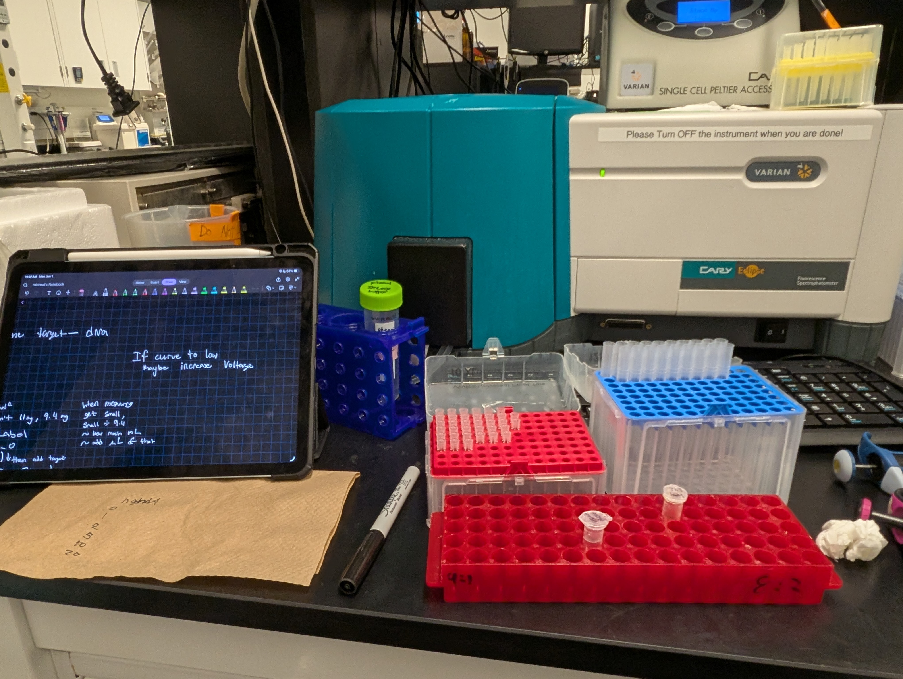

DNA Biosensors (Co-op for Summer 2026)
Overview
In a lab at Uwaterloo with Prof. Juewen Liu where I am working with biosensors based on DNA aptamers based on binding assays, fluorescence plate readers, and other spectrometers. Co-authoring a comprehensive academic reviewpaper detailing the development of highly specific DNA aptamers for the rapid detection of agricultural contaminants, including herbicides, pesticides, and insecticides.
The problem
Herbicides, pesticides and insecticides can end up in soil and water, and checking for them usually means sending samples away for slow, equipment-heavy analysis. A sensor that detects them quickly and specifically would make environmental monitoring much easier.
DNA aptamers are short strands of DNA, found through a process called SELEX, that bind one specific target molecule. Built into a biosensor, they can turn that binding into a readable signal. The key number is the dissociation constant (Kd), which describes how tightly an aptamer holds its target: the lower the Kd, the tighter the binding.
What I did
Lab work: I am synthesizing extensive biochemical literature to evaluate complex aptamer binding affinities (Kd) and biosensor integration strategies for environmental monitoring by using SELEX, DNA aptamer targets like hydoquinone, resorcinol, phenol. Furthermore, I am also conducting rigorous literature reviews, managing large bibliographic databases, and ensuring strict adherence to academic formatting and citation standards for journal submission.
Review paper: I co-authored a comprehensive review on how highly specific DNA aptamers have been developed for the rapid detection of herbicides, pesticides and insecticides. I synthesize the biochemical literature to compare aptamer binding affinities (Kd) and the ways aptamers are integrated into biosensors for environmental monitoring, including SELEX-derived aptamers for targets such as hydroquinone, resorcinol and phenol.
Paper management: I run the literature searches, manage a large bibliographic database, and make sure the manuscript follows the academic formatting and citation standards required for journal submission.

Figure 1: Bench setup for characterizing aptamer binding and running fluorescence assays.
Techniques and tools
| Technique | What it's for |
|---|---|
| SELEX | Selecting DNA aptamers that bind a chosen target |
| Binding assays | Measuring how strongly an aptamer binds its target (Kd) |
| Fluorescence plate readers and spectrometers | Reading the signal that shows binding, including on the Varian Cary Eclipse fluorescence spectrophotometer |
| Literature review | Comparing published aptamers and biosensor designs for the review paper |
| Wet Lab Work | Conducted experiments in the lab for data. |
Outcome
The review paper is being published in ACS Nano Medicine, titled: "Enzyme versus Nanozyme Therapeutics: Opportunities and Challenges"